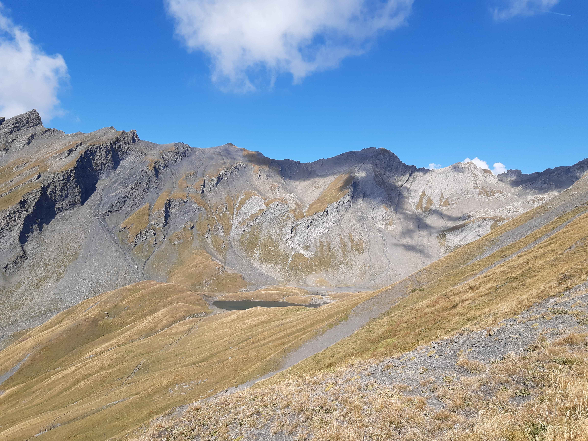

Retour
Massif du Mont-Blanc
Lancebranlette
- Type : aller-retour
- Description de l'itinéraire : la baraque des Douaniers - Lancebranlette
- Distance : 7 km
- Dénivelé positif : 800 m
- Point le plus bas : 2149 m
- Point le plus haut : 2936 m
- Cotation en l'absence de neige : T3
- Intérêt : 5/5
- Date : 29/8/2022
- Photos :
 Le lac sans Fond  Le mont Blanc
Le mont Blanc  Les Alpes grées
Les Alpes grées  Le massif de la Vanoise
Le massif de la Vanoise
Lac sans Fond
- Type : boucle
- Description de l'itinéraire : la baraque des Douaniers - les Rousses - lac sans Fond
- Distance : 6 km
- Dénivelé positif : 300 m
- Point le plus bas : 2149 m
- Point le plus haut : 2464 m
- Cotation en l'absence de neige : T2
- Intérêt : 3/5
- Date : 20/8/2022
- Photos :
 Le lac sans Fond
Le lac sans Fond  Le col du petit Saint-Bernard
Le col du petit Saint-Bernard